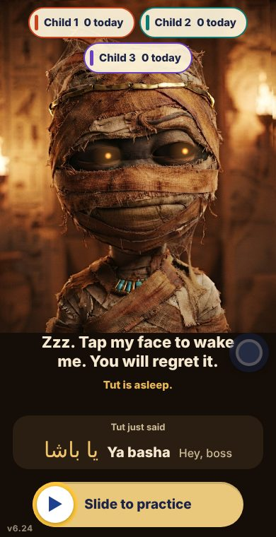

v6CurrentNov 13, 2026
Cool Tut
Theme: Dark tomb, realistic dusty little mummy (30-shape mouth)
- Everything in v5
- Talks like a real person: answers when spoken to, keeps a back-and-forth going, stays quiet when people are talking to each other
- Cooler, drier character; jokes are rationed, not in every line
- Rotates his jokes: remembers his recent lines and avoids repeating them; 'woke up after 3,000 years' bits used rarely
- Voice-ID notes no longer make him butt in
- Screen stays on while Tut is awake; long chats reconnect on their own instead of switching off
- Parents > Tut's memory now lists what he remembers, grouped by kid; in instructions mode he reads it out per kid when asked
- Stronger voice recognition: many samples per person, 'Add more' recordings, learns from play; about 3x fewer misses in testing
- Chaos watch: screaming is called out within ~4 s; nonstop talking-over-each-other gets checked every ~6 s instead of waiting for it to end
- Can look things up online (Google Search): weather, facts, news, scores; kid-safe answers
- Arabic teaching level 0-10 (default 3) in Parents or by voice in instructions mode
- Simpler app: no tab bar. One floating, draggable, see-through blue Parents button (like the iPhone AssistiveTouch circle) opens a PIN screen; entering the PIN puts Tut to sleep. 'Save and go back to Tut' button. Old Practice tab replaced by one 'Practice with Tut' button; Favors moved into Parents
- Pick Tut's look with pictures at the top of Parents: realistic mummy or the cartoon mummy from v2
- Fix: PIN, teaching level, voice samples and look are now kept after the app restarts
- Practice button fixed: Tut starts the word challenge out loud right away (also when he was asleep)
- Practice mode: 12 rotating openers, clear rules (say-it-back / guess-it rounds, by name), tests each word until mastered; Parents shows the words each kid knows
- Tut announces every point change by name and number, rotating lines, sarcastic for lost points; changes made while he slept are announced when he wakes
- Practice is now a slide-right switch that slides back when practice ends; Tut practises only with the kid(s) actually there (by voice, or asks who is practising)
- Tut says each word's meaning out loud; tests recall, not just repeating; 1 point for repeating, 5 for remembering on their own; only remembered words count as mastered
- Version number (vX.Y) shown on the Tut screen and in Parents
Needs a Google Gemini key in Parents.
Open Cool Tut